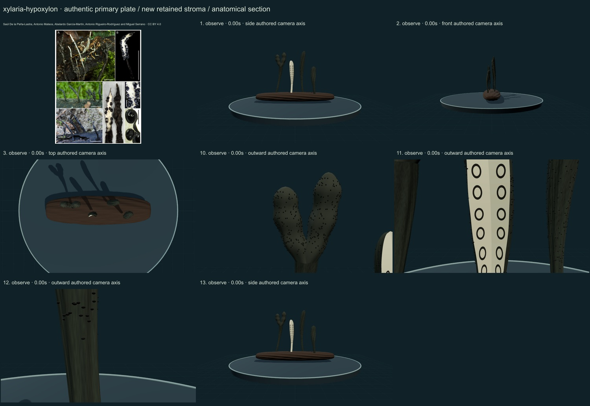
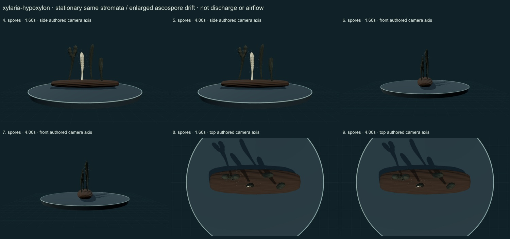

Candlesnuff fungus · selected mature ascomycete study · v0.6.27
Thirteen actual final rendered states were inspected against the credited primary plate. This is a partly stylized, unmeasured educational reconstruction with a prepared section. No measured tissue, physiological simulation, accuracy percentage or independent specialist validation is established.
A narrow, long-stiped mature study is distinct from broad X. polymorpha. The initial pair of symmetrical long pointed forks resembled regular antlers; one fork was removed, remaining fertile branches were shortened, thickened and made unequally nodulose, and abrupt shaft scaling was removed. A prepared section is explicitly separate from a white conidial appearance.
Dark furrowed cortex and fine selected fertile papilla cues distinguish the mature exterior from pale cut tissue. The section-wall correction removes protruding black lump cues and later crescent occlusion. The complete authentic plate retains its different prepared and intact panels and original scale bars.
Retained stationary mature stromata support an enlarged authored ascospore-drift overlay. White conidial coating, growth, germination and decomposition are not animated. This presentation does not merge a conidial stage with a mature sexual-form process.
Branch junctions intersect rather than reproduce a measured continuous tissue union; the remaining fork is still regular. Basal hairs, exact nodules, conidiophores, perithecial walls and ascus microanatomy are incomplete. The prepared white core and ring walls are diagrammatic and unmeasured. Material response, hair density, natural stages, spore dimensions and flow are not calibrated. Close foci are partial anatomy views, and the edge-on front view occludes structures. This selected mature study is not a complete species-complex identification or life-cycle simulation.
The plate contains authentic photographs and prepared sections, credited to Saúl De la Peña-Lastra, Antonio Mateos, Abelardo García-Martín, Antonio Rigueiro-Rodríguez and Miguel Serrano under CC BY 4.0. Source scale bars apply only to the plate and do not calibrate the normalized model. Primary 2026 Figure 12: X. hypoxylon intact and sectioned material AMI-SPL1139 and AMI-SPL1819, on source-reported laurel wood. All panels are retained with labels and bars. The mature model is distinct from the white conidial presentation; difficult species-complex determinations require microscopic/molecular evidence beyond this model.


Open the retained interactive model · Individual review data
Complete publisher plate, resized and JPEG encoded without generative alteration. Original download SHA-256: 837035e5c82f2a71d15e5f7341583da5333f9ce02cba46791b57a0c40ceb98af. Delivered reference SHA-256: b614f0ba782c9359418cc9c9a30dd9407723aa82f27007fbf8032da876af3631.
Global occurrence maps and counts remain withheld because the cited species-complex determinations have not been reconciled. No Smithsonian specimen determination or native-range validation is claimed.